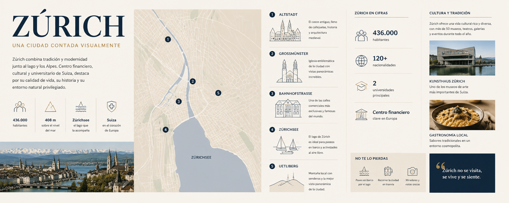
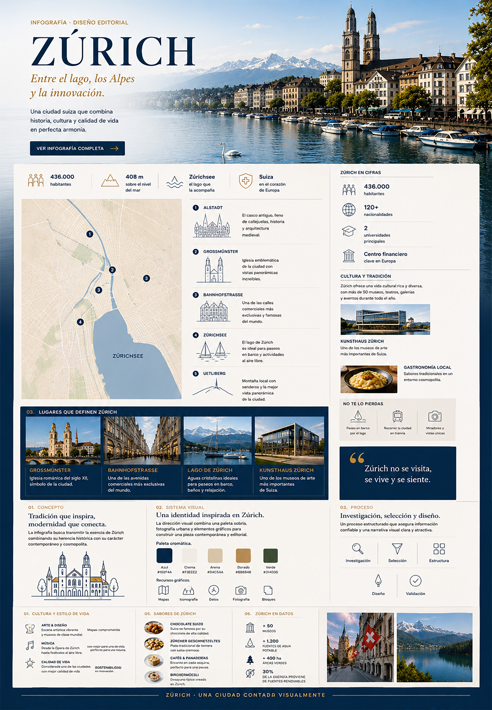
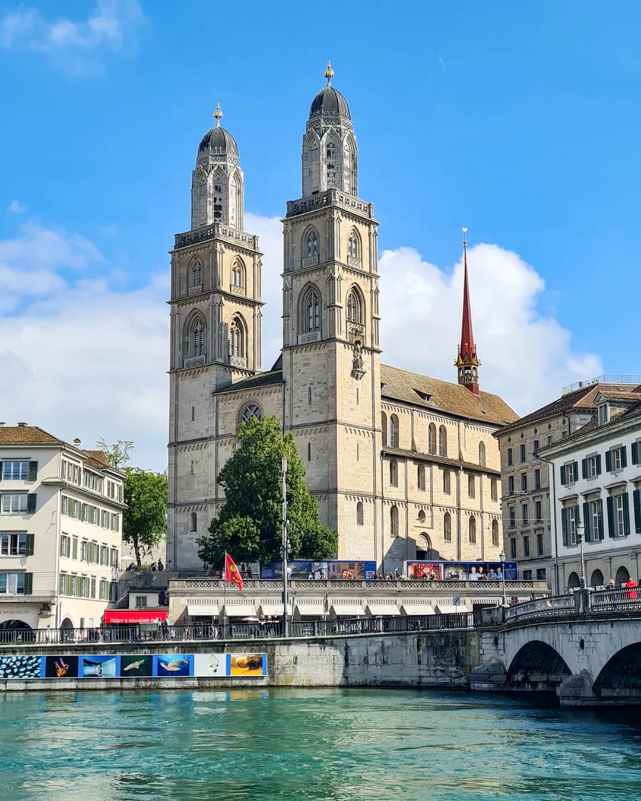
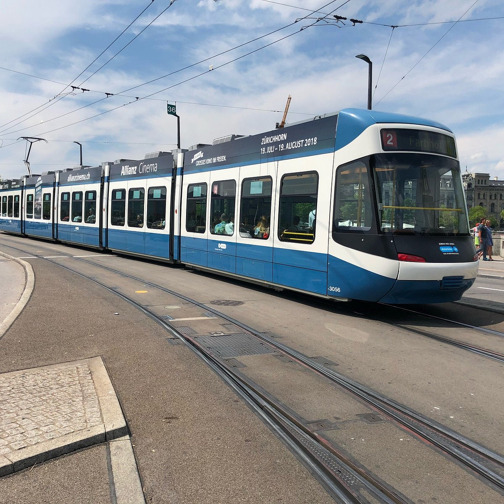
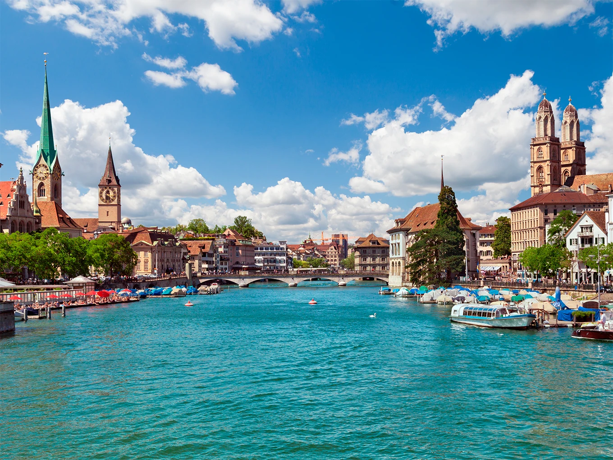

Una mirada editorial.
La ciudad se presenta desde una perspectiva visual que combina patrimonio, arquitectura, naturaleza, cultura y estilo de vida.

INFOGRAFÍA · DISEÑO EDITORIAL
Una pieza editorial que transforma información geográfica, cultural y turística en una experiencia visual clara, atractiva y fácil de recorrer.

01 · EL CONCEPTO
El desafío fue organizar una gran cantidad de información sobre Zúrich sin perder claridad, ritmo visual ni atractivo editorial.
La ciudad se presenta desde una perspectiva visual que combina patrimonio, arquitectura, naturaleza, cultura y estilo de vida.
La información se organiza mediante jerarquías, módulos e imágenes que permiten encontrar rápidamente los contenidos principales.
02 · SISTEMA VISUAL
La dirección visual combina una paleta sobria, fotografía urbana y elementos gráficos para construir una pieza contemporánea y editorial.
El azul profundo aporta carácter y contraste, mientras los tonos crema y dorados aportan calidez y una sensación editorial.
La composición combina fotografías, mapas, iconografía y bloques de información para crear diferentes niveles de lectura.
Referencias geográficas y ubicación.
Elementos culturales, arquitectura y lugares.
Cifras y estadísticas clave.
Imágenes urbanas y de entorno.
Información organizada en módulos claros.
03 · PROCESO DE DISEÑO
Antes de construir la pieza final, la información se organizó en categorías para definir una estructura clara y equilibrada.
Selección y organización de la información relevante sobre la ciudad.
Definición de títulos, categorías y niveles de lectura.
Distribución de mapas, fotografías, datos e iconografía.
Ajuste visual para conseguir equilibrio, legibilidad y coherencia.
04 · DISEÑO DE INFORMACIÓN
La información se dividió en módulos para facilitar la navegación visual y evitar que la cantidad de contenido se sintiera abrumadora.
Datos esenciales que permiten conocer rápidamente la ciudad.
Mapas y referencias espaciales para contextualizar Zúrich.
Principales espacios y puntos de interés representados mediante fotografía.
Patrimonio, estilo de vida y elementos que construyen la identidad de la ciudad.
Sabores y preparaciones tradicionales integrados dentro del recorrido.
Pequeños contenidos que aportan descubrimiento y hacen más entretenida la experiencia.
05 · RESULTADO FINAL
El resultado reúne información, fotografía, ilustración e identidad visual en una composición pensada para comunicar de manera clara y memorable.

06 · LA CIUDAD EN DETALLE
Zúrich reúne información, cultura y paisaje en una experiencia visual pensada para explorar.


